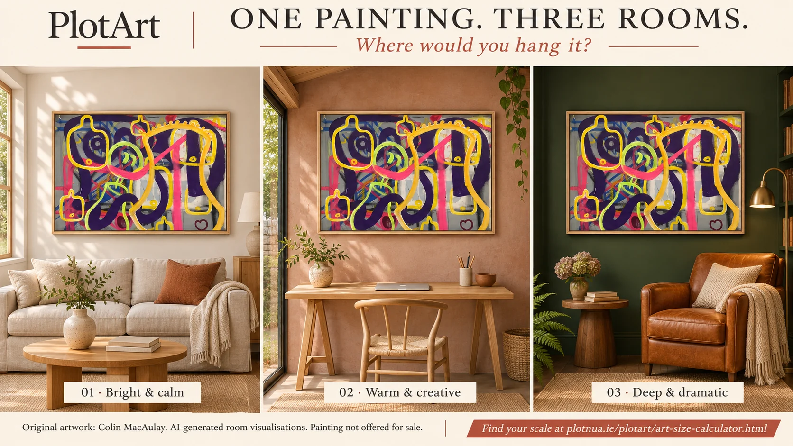

PlotArt · Art for your home
Choose art you want
to live with.
A living room does not need to look like a gallery. Start with a work that holds your attention, then check how its size, colour and materials will sit in the space you use every day.
Free, one-page checklist. No account or email required.
01 · Scale
What size art works above a sofa?
Measure the sofa from one outer arm to the other. Then measure the usable wall: windows, lamps and shelving may leave less room than the furniture below suggests. For the artwork, use the outer dimensions including the frame.
As an optional styling starting point, try a total artwork width around two-thirds to three-quarters of the sofa width. This is the proportion suggested in Saatchi Art’s home-buying guide, rather than a requirement or a test of whether an artwork is right for you.
| Sofa width | About two-thirds | Three-quarters |
|---|---|---|
| 180 cm | 120 cm | 135 cm |
| 200 cm | 133 cm | 150 cm |
| 240 cm | 160 cm | 180 cm |
A narrow wall or a deliberately small painting can call for a different approach. Try the free art size calculator to compare the outer artwork dimensions with your furniture or clear wall. The outline shows proportions; it does not predict the room’s appearance.
One painting or a group?
For two or more pieces, measure the full arrangement from the first frame’s outside edge to the last, including the spaces between them. Lay the arrangement out on the floor first. A group can build over time; it does not have to be bought together.
02 · Colour and attention
Does the art have to match the room?
Matching is one option. Another is to let the painting introduce a colour that is not already there. Look for a relationship you enjoy: a repeated warm tone, a contrast against a quiet wall, or a shape that interrupts the straight lines of the furniture.
Ask what you notice beyond the palette. Does your eye return to a particular mark? Does the surface reward a closer look? If you like a work only because it matches a cushion, spend more time looking before deciding.

On a screen, colours depend on the photograph, display and lighting. Ask the artist for further images or whether a viewing is possible. For ways into the work itself, explore our introduction to abstract and contemporary Irish art.
03 · Position
Try the position before making holes.
Make a paper template at the artwork’s outer dimensions and hold it in position, or use a freestanding mock-up without attaching anything to a delicate wall finish. Look from the doorway, from your usual seat and from nearby. Include the headroom needed when someone sits or stands beneath it.
Try more than one height. The centre of the wall is not automatically the best position: the sofa, a nearby doorway or the arrangement of other objects may be the more useful reference. Leave enough space to use the room comfortably.
Before installation, confirm the work’s weight and suitable fixings for the wall with the artist, framer or installer. A template checks position; it does not establish that the wall or fittings can carry the work.
04 · The physical work
Check the light, heat and frame.
Watch the proposed spot at different times of day. A wall that looks shaded in the evening may receive strong sunlight in the morning. Avoid placing the work in direct sunlight or immediately beside a source of heat, and ask for care advice for its particular materials.
The Canadian Conservation Institute’s basic care guidance explains how light exposure and changes in temperature and humidity can affect paintings. Works on paper and other materials can need different protection: confirm what applies to your piece.
Ask whether the work comes framed and ready to hang. For an unframed work, discuss mounting, glazing where appropriate and the final outer size with a framer before measuring the wall again.
05 · Before you commit
Eight checks before buying art.
- The work: confirm the artist, title, medium and whether it is a unique work, original print or reproduction.
- Dimensions: record the outer framed width and height, not just the image size.
- Room: compare the scale, position and everyday sightlines.
- Condition: ask about existing marks, damage, repairs or anything not clear in the photographs.
- Care: confirm suitable light, temperature and handling for the materials.
- Total cost: establish what the asking price includes and any framing, delivery or installation costs.
- Practical arrangements: agree payment, collection or delivery, timing and any viewing or return arrangements with the artist.
- Written record: keep the agreed details and ask what receipt or documentation accompanies the work.
Take the checklist with you.
Download the one-page art-buying checklist (PDF). Print it for a viewing, or save it to your phone before making an enquiry.
For more on originals, prints and what prices mean, read Buying original art in Ireland. When you are ready to explore, visit the PlotArt Artists’ Gallery. Published galleries show the artist’s own work and details; PlotArt passes enquiries to the artist, who arranges any sale directly.
Published 8 November 2026. General guidance for choosing and displaying art; follow advice specific to the artwork and your wall.